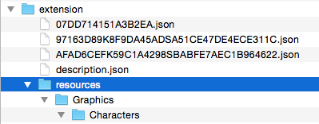

安装/卸载脚本
T为了让您更精确地控制插件的安装或卸载，Visual Novel Maker 支持安装/卸载脚本。
安装脚本
安装脚本允许您在安装扩展时修改现有文档。如果您更新了扩展并且需要迁移旧版本扩展中已有的数据，这将非常有用。
要创建安装脚本，只需转到“扩展编辑器”并在“脚本”文件夹上单击鼠标右键。从上下文菜单中选择“新建”>“JavaScript 文件”并创建一个新脚本。您也可以选择“Objective-J 文件”以进行更高级的操作。然后您可以在扩展组合器中选择该脚本。脚本的格式应如下：
{
migrate: function(uid, document, version, extension ) {
// 必要时修改“document”
}
}
正如我们在这里看到的，安装脚本需要定义并返回一个包含 migrate 函数的对象。该函数接受 4 个参数：
uid - string
当前正在处理的文档的 UID。
document - Object
当前正在处理的文档的数据（项目）。
version - string
您当前已安装扩展程序的先前版本。如果没有先前版本的扩展程序，则为 <b>null</b>。
extension
您的扩展程序的数据（项目）：{ name, id, version, author, website, description, license, installScript(UID), uninstallScript(UID), active }。
migrate 函数仅对“data_record”和“vn.scene”类型的文档执行。如果文档已修改，则必须返回 <b>true</b>。否则更改将不会保存。
卸载脚本
卸载脚本允许您在扩展被卸载后执行一些清理代码（如果需要）。要创建卸载脚本，只需转到“扩展编辑器”并在“脚本”文件夹上单击鼠标右键。从上下文菜单中选择“新建”>“JavaScript 文件”并创建一个新脚本。您也可以选择“Objective-J 文件”以进行更高级的操作。然后您可以在扩展组合器中选择该脚本。脚本的格式应如下：
{
cleanUp: function(uid, document, version, extension ) {
// 必要时修改“document”
}
}
正如我们在这里看到的，卸载脚本需要定义并返回一个包含 cleanUp 函数的对象。该函数接受 4 个参数：
uid - string
当前正在处理的文档的 UID。
document - Object
当前正在处理的文档的数据（项目）。
version - string
您当前已卸载扩展程序的当前版本。
extension
您的扩展程序的数据（项目）：{ name, id, version, author, website, description, license, installScript(UID), uninstallScript(UID), active }。
cleanUp 函数仅对“data_record”和“vn.scene”类型的文档执行。如果文档已修改，则必须返回 <b>true</b>。否则更改将不会保存。
安装资源
首先，扩展程序应仅安装使用扩展程序而没有错误所必需的资源。扩展程序不应被滥用为资源包或类似用途。如果扩展程序因大量图形和音频资源而变得过大，它将不会被扩展管理器处理。
要使用您的扩展程序安装资源，您需要先使用扩展组合器导出它。扩展程序只是一个 zip 文件夹，您可以轻松地将其解压。接下来，您需要在扩展的根目录下创建一个名为“resources”的新文件夹。在该文件夹中，您可以复制所有您想要安装的资源。您需要将它们放入正确的主目录，例如“resources/Graphics/Characters”应包含您想要安装的所有角色图形。无法指定逻辑子文件夹作为安装目标。

添加完所有要安装的资源后，只需再次压缩扩展文件夹即可。如果您的扩展程序被卸载，所有由您的扩展程序安装的资源都将被删除。